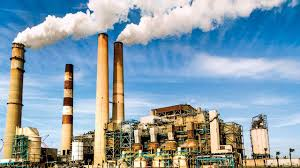
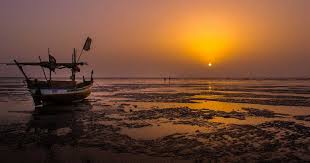

The Meaning of "Vapi" in Sanskrit is water storage body.Here all the people of different religion live with full of joy. After independence ,the community of Anavil Brahmin who formerly acted as tax farmers during the era of the Maratha Empire received the land.

Vapi Town is known as City of Chemicals.A Town which is known for the chemical industries and petroleum industries. Vapi is the largest industrial area in Gujarat in terms of small-scale industries and fully dominated by Chemical Industries.
Industries such as Alok industries, Welspun Terry Towels etc.

The town which is located very near to Daman hence one can enjoy the view.The view at the seashore with the sunrise or the sunset gives an holistic view.
In the beach, one can feel very calm and nostaligic. One can enjoy the boat ride and have jogging in the early morning or in evening near the beach.